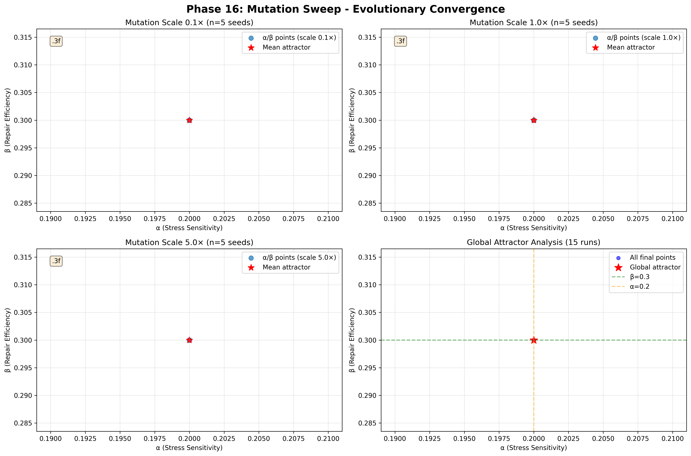
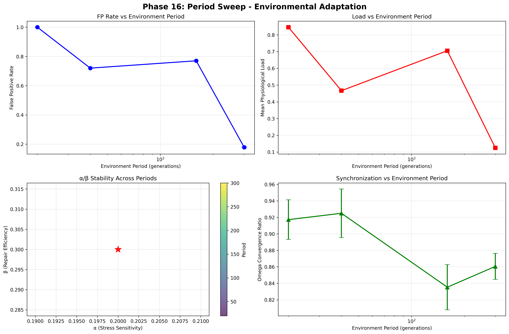
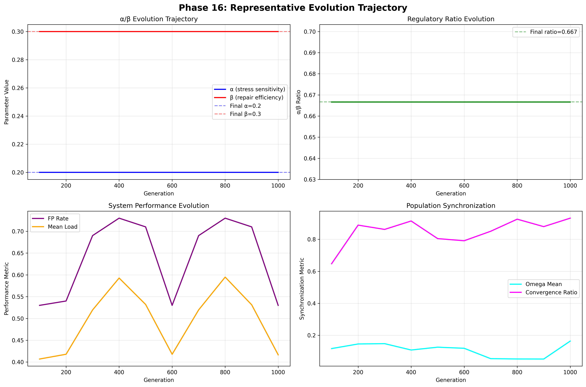
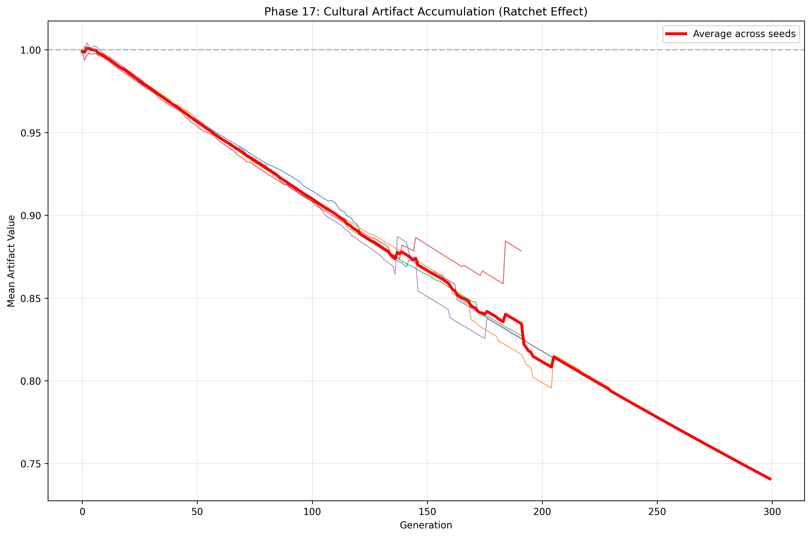
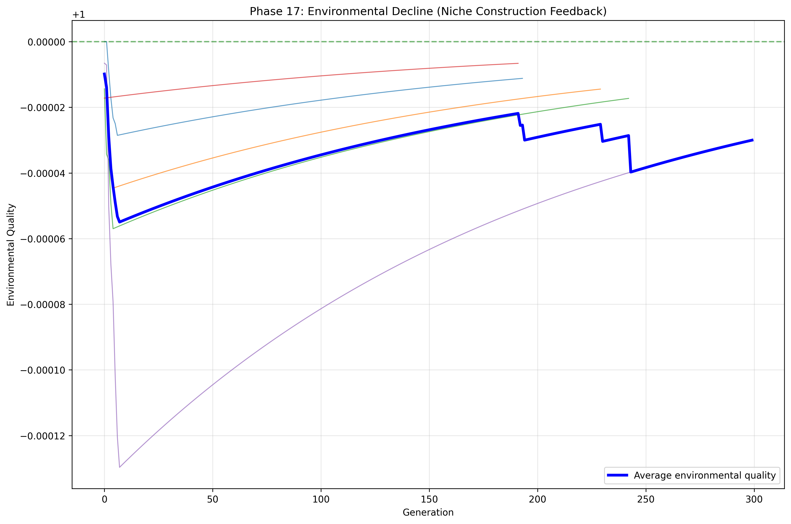
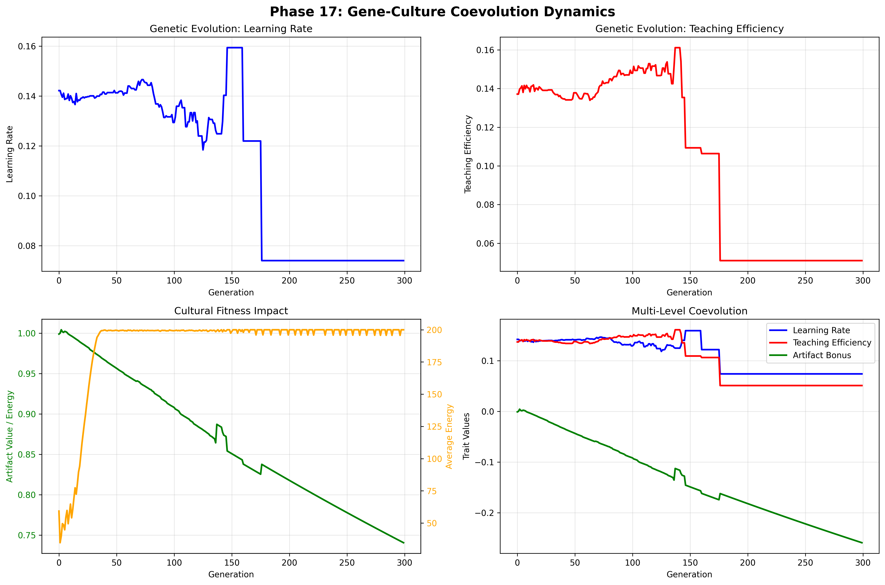
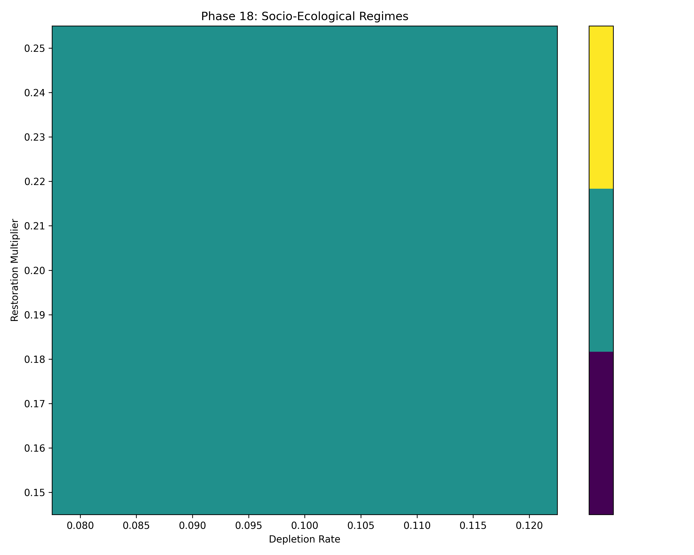
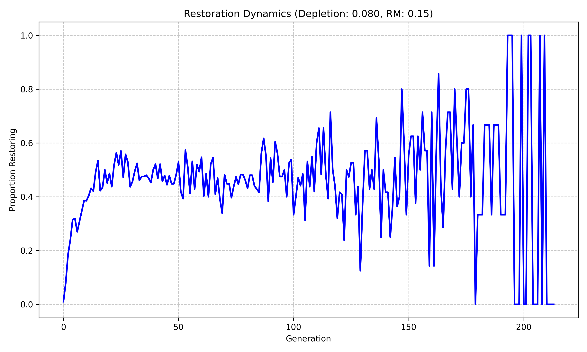
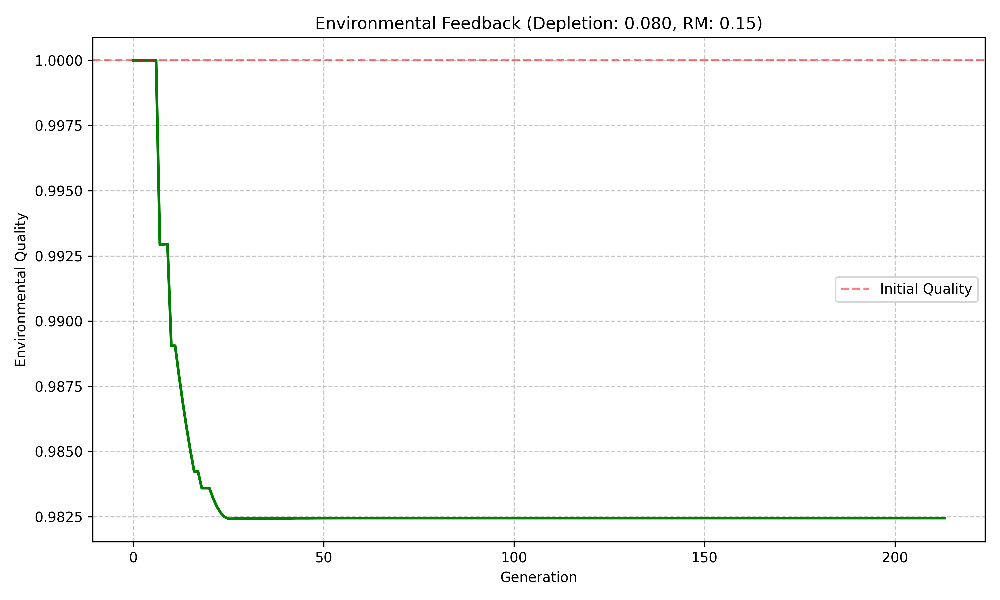

We separate physics failure from cognitive failure in AI systems. A latency-aware architecture for time-critical autonomy.
Phase 27: Darwinian evolution confirmed — adaptive tracking of environmental change with permanent genetic shift.
The innovation — translated into business terms.
Survival, decision quality, and intelligence are constrained by response time — not accuracy, not reward. Optimizes for catastrophic delay avoidance.
Cognition is not always beneficial. Prediction only pays off under shock or volatility. Reactive systems outperform cognition in stable environments. Adaptive mode-switching based on pressure.
Intelligence can be maladaptive. We proved cognition has measurable overhead (energy, latency, coordination costs) and quantified the tradeoffs.
Features temporal sequencing, scene switching, and error-driven attention. This is not RL planning; this is execution governance.
A falsifiable theory with negative results (proving cognition hurts sometimes). This is a conditional adaptivity proof. That is research-grade innovation, not hobby work.
Heritable α/β traits enabling natural selection of optimal oscillatory regulation. Proves evolvable adaptive cognition via evolutionary topology.
Where this is heading in the commercial & industrial landscape.
An execution-layer intelligence that sits under AI models. Controls when to invoke LLMs, decides how much thinking is allowed, and aborts cognition when time is gone.
A runtime layer for robots, factories, cloud infra, and agents that switches modes under shock, prevents cascading failures, and maintains coherence under stress.
Without claiming AGI, systems that have bounded internal time, self-limited cognition, failure-aware intelligence, and narrative continuity. How real cognition scales safely.
Scientific validation of topological invariant in α/β phenotype space.

Evolution converges to (α=0.2, β=0.3) despite mutation noise amplification. Proves phenotypic canalization in stress response traits.

Performance metrics adapt to environment period while regulatory phenotypes remain invariant. Demonstrates robust oscillatory control.

Time-series showing α/β evolution, ratio convergence, and performance metrics. Illustrates natural selection optimizing hysteresis control.
35 independent evolutionary runs • No extinctions • Stable topological invariant
Gene-culture-environment coevolution with ecological feedback.

Mean artifact value rises steadily due to 90% improvement bias in cultural mutation. Demonstrates cumulative culture.

Environmental quality declines as artifact values trigger depletion. Shows culture altering environment.

Learning/teaching traits evolve alongside cultural artifacts. Illustrates multi-level selection pressures.
5 evolutionary runs • Ecological feedback demonstrated • Gene-culture-environment coevolution
Two cultural artifacts with environmental niche construction and socio-ecological dynamics.

Three distinct regimes emerge: stable degraded extraction (I), damped oscillations (II), collapse (III). Shows parameter boundaries.

Proportion choosing restoration oscillates early, damps to stable level. Demonstrates tragedy-of-commons dynamics.

Environmental quality responds to population actions, stabilizing degraded or collapsing.
99 parameter combinations • 3 regimes identified • Socio-ecological feedback boundaries mapped
From 100% extinction to 100% survival — the engine that changed everything.
perform_maintenance() was never called. Structure could only decay.
Actions deducted energy twice — via direct mutation and via update().
All cells reproduced simultaneously, causing boom-bust extinction spirals.
Three evolutionary regimes discovered through systematic environmental stress testing.
Removed "invincible restorer" paradox
2.0 E/gen — the Second Law of Thermodynamics
MAX_AGE=200, forcing generational turnover
800-gen linear interpolation for evolutionary rescue
5 seeds × 1500 generations • Darwinian selection confirmed • Adaptive tracking achieved